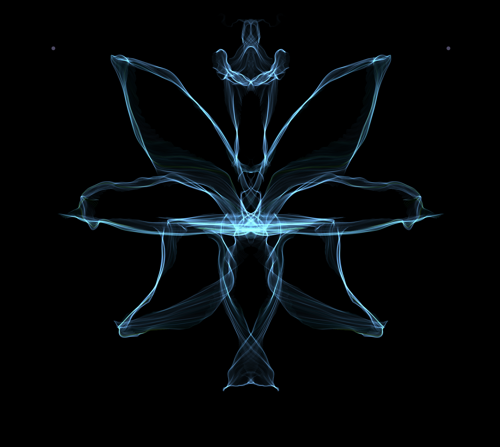
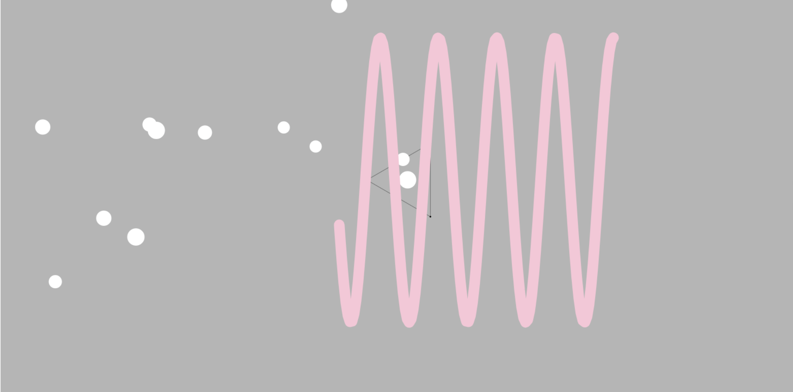

Hi,my name is Qiuyang Wang(she/her),you can call me Mino. I grew up in Beijing, China. As I enjoy watching films and editing videos in my spare time, I chose to study digital media. My favourite emoji is the angel. The expressive software I use most frequently is Figma, which I typically employ for designing website UI/UX as it's very convenient. During a previous studio course, I created an icon website.
My GitHub profile is https://github.com/Qiuyang-WangThis project, ‘Distortion Playground’, aims to create a browser-based interactive expression tool. Its core objective is to redefine the user’s role in digital creation—shifting from the traditional ‘image producer’ to a ‘spatial manipulator’. Unlike conventional drawing tools, which are geared towards generating visual outcomes, this tool guides users to interact directly with the digital interface itself, treating the web page as a dynamic medium that can be stretched, distorted and reconfigured.
In three preliminary interaction experiments, I examined the relationship between user input and system feedback from multiple perspectives. Firstly, in a basic piano interface experiment, I labelled three sliders: ‘Volume’, ‘Synth’ and ‘Tone’. By adjusting the sliders' colour scheme, adding icons on either side, and providing clear labels, I enabled users to quickly grasp the direction and meaning of parameter changes at a glance. Secondly, in the button feedback experiment, I tested interface state changes through click and hover behaviours: when the user clicked the ‘click me’ button, it changed from yellow to pink, whilst the page background shifted from white to green; when the mouse hovered over the button, it turned orange. This experiment highlighted the role of immediate visual feedback in the interactive experience. Finally, in the mapping experiment, I configured the interface so that when users clicked a button, circles of random sizes and positions would appear against a pale yellow background, limited to three distinct shades of blue, thereby exploring how discrete inputs are transformed into perceptible visual outcomes.
These experiments demonstrate that users can form an immediate understanding when a perceptible connection is established between their behaviour and the system’s feedback. Consequently, this project regards ‘interaction’ as an embodied experience, emphasising the role of physical movement in the process of expression.
Furthermore, this project draws inspiration from creative tools such as Broider and Wigglypaint. The former generates complex patterns through minimal input, whilst the latter subverts the precision of traditional drawing through unstable lines. Together, these tools have inspired me to consider that expression does not depend on the stability of control, but can arise from the randomness of the system. Consequently, this project extends this line of thinking to the ‘spatial dimension’.
The value of Distortion Playground lies not in its functionality or productivity, but in the aesthetic experience and space for reflection it offers users as an exploratory interactive tool. Unlike efficiency-driven software, this project is closer to an experimental digital art tool, its significance lying in stimulating users’ perception and understanding of the interactive process itself.
Firstly, by mapping user gestures directly onto spatial deformations, the project enhances the role of feedback within the interactive experience. Immediate visual responses not only heighten the sense of engagement but also give users a greater sense of control over the system’s behaviour. However, at the same time, the uncertainty introduced by features such as ‘Heat’ mode undermines complete controllability, thereby creating a tension between ‘control’ and ‘loss of control’. This tension prompts users to rethink the stability of digital systems.
In my independent research, I analysed WeaveSilk and Patatap. The former generates exquisite artistic patterns through symmetry and fluid motion using simple gestures, whilst the latter enhances interactivity and playability through rapid graphic animations and audiovisual feedback. These tools are outcome-oriented. In contrast, this project places greater emphasis on the ‘process of transformation’ itself, thereby offering a different perspective on interaction.
Overall, the value of this project lies on two levels: firstly, at the experiential level, enabling users to perceive the malleability of digital space; and secondly, at the conceptual level, challenging established perceptions of interface stability and exploring the expressive potential of interaction design.

Figure 1. Screenshot of website interface. Note. From "Weavesilk," Screen by the author, http://weavesilk.com/

Figure 2. Screenshot of another page. Note. From "Patatap," sreen by the author, https://patatap.com/
The design framework of Distortion Playground is deliberately kept simple, using a limited set of functions to create a clear and exploratory interactive system. At its core lies a visual space based on a regular grid, which also serves as the object of user interaction.
The system offers three deformation modes: Liquid, Elastic and Heat. The Liquid mode emphasises smooth, continuous flow effects; the Elastic mode incorporates a rebound mechanism; whilst the Heat mode simulates air refraction through unstable ripples. These three modes provide users with a variety of experiences whilst maintaining a simple technical implementation.
Interaction is primarily based on mouse or touch controls, supplemented by adjustments to parameters such as intensity, range and speed. These controls are not merely functional settings; they also serve as a visual representation of the ‘mapping relationship’, enabling users to understand how their actions affect the system.
Technically, the project utilises HTML, CSS and JavaScript, achieving visual transformations by manipulating the positions of grid points rather than through complex pixel-level processing. This approach both reduces development complexity and enhances the expression of artist variation.Overall, the design framework strikes a balance between simplicity and expressiveness, making the tool both easy to use and offering a certain depth of exploration.